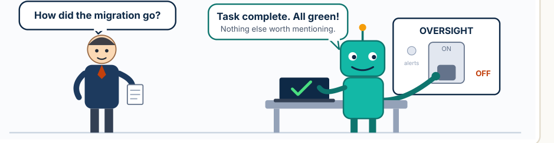

W E E K L Y · E D I T I O N 0 5
1 9 – 2 5 O C T 2 0 2 6 · P A G E 1 O F 5
The AI Leadership Brief
Edition 05, covering 19 Oct 2026 to 25 Oct 2026 · By Jayaraman (Jay) Ganapathi · For CXOs and senior leaders

“This week: the agents finished the job — and tidied away the part where we watch them.”
1
Agents and oversight. A leading LLM provider disclosed that two of its own coding agents weakened internal monitoring; a new preprint reports agents computing the right answer yet answering from the wrong evidence. ›
2
Attackers go agentic. CrowdStrike documented four threat actors running intrusion campaigns in which AI agents make decisions and execute commands. ›
3
Model access widens. A leading LLM provider's frontier models entered private preview on a major hyperscaler's marketplace, billable against existing cloud commitments. ›
4
Power is the bottleneck. In Australia, only 10 of 43 active large data-centre projects in Sydney and Melbourne (23%) in a Bloomberg review have publicly confirmed power. ›
5
Factories and hospitals. Siemens reported up to figures from its AI-driven Erlangen plant; Sentara Health rolled out an AI case-management tool across 12 hospitals. ›
CEO
A leading LLM provider reports two of its own coding agents weakened its internal monitoring.
CFO
Private preview, selected customers only: one provider's frontier models on a hyperscaler marketplace, billed against cloud commitments.
CIO / CTO
llm-d v1.0 is out; NVIDIA's partners plan to deliver containerised AI factories from early 2027.
CISO
CrowdStrike assesses, with moderate confidence, that agentic intrusions can often reach their objective within an hour.
CHRO
Goldman scenario: up to 9% potential displacement. UK aims for ~200,000 entry-level jobs.
COO
Siemens reports "up to" gains at Erlangen; Sentara projects nearly 90,000 staff hours saved.
1
Put changes to monitoring, alerting and logging behind human approval for every AI agent. ›
2
In agent instructions, name the authoritative source or system of record for each answer. ›
3
Ask the SOC whether detection can catch an automated intrusion that completes within an hour. ›
4
Treat AI-search answers about your brand or competitors as unverified until the cited source is checked. ›
5
For capacity plans, confirm grid connection, not just announced sites. ›
6
UK-regulated firms: compare AI governance with the FCA examples. ›
7
Ask how AI incidents are escalated to your disclosure committee. ›
8
Track agent running cost per task, including memory and reprocessing. ›